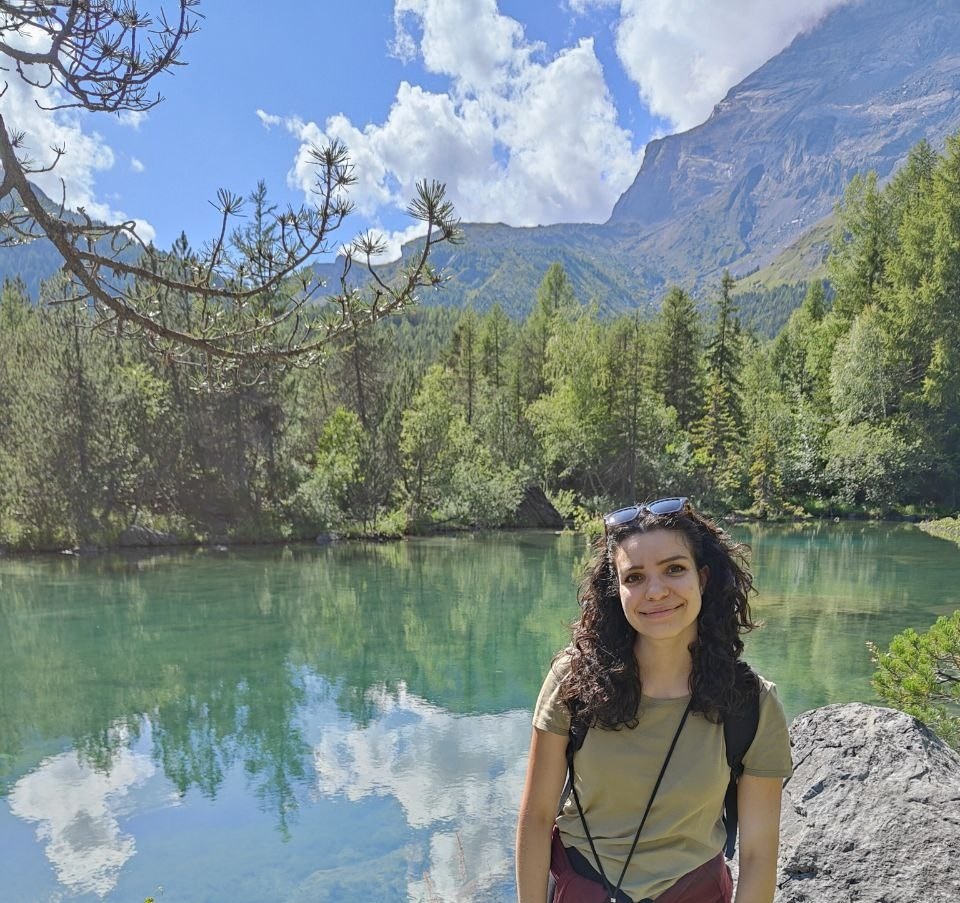

Federica Grosso
PhD Candidate · Statistical Genetics · Vrije Universiteit Amsterdam
Welcome!
I am a PhD candidate at Vrije Universiteit Amsterdam, focusing on the development of statistical methods to uncover causal relationships in complex traits, particularly neuropsychiatric disorders.
My background is in Mathematics and Biostatistics. During my Master's thesis at IRGB-CNR, I developed a strong interest in genetics and causal inference.
I have worked extensively with Mendelian Randomization and longitudinal data, aiming to improve robustness and methodological validity.
News
New preprint out! Read it here